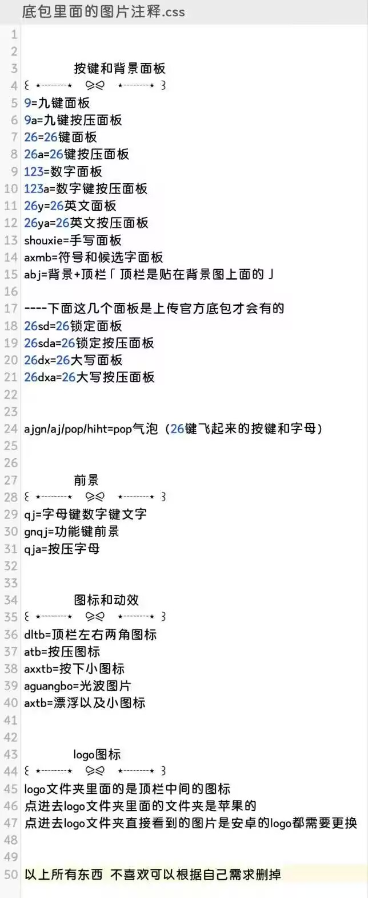
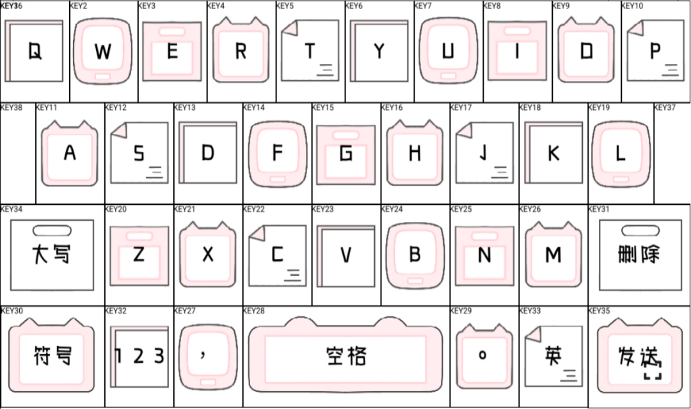
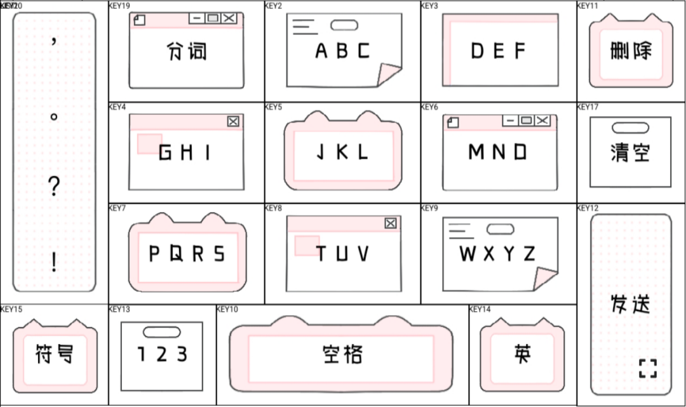
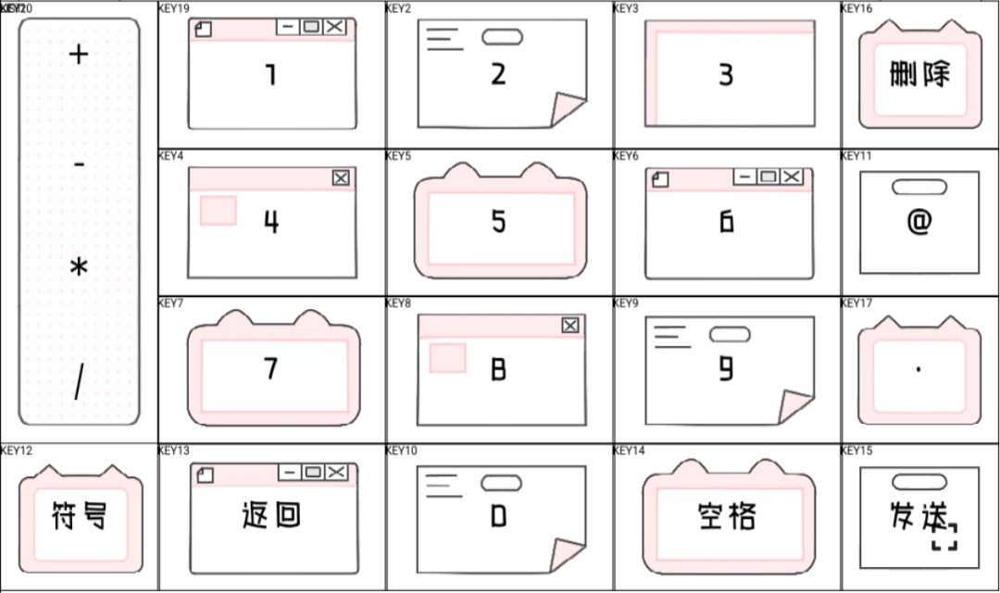
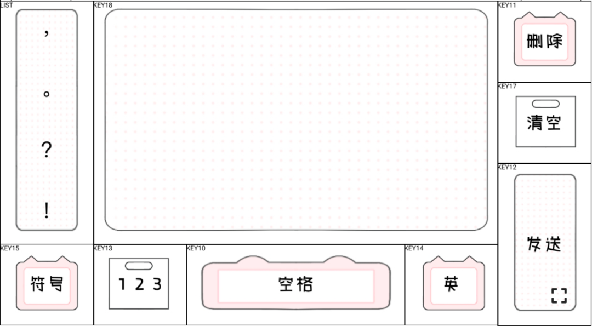
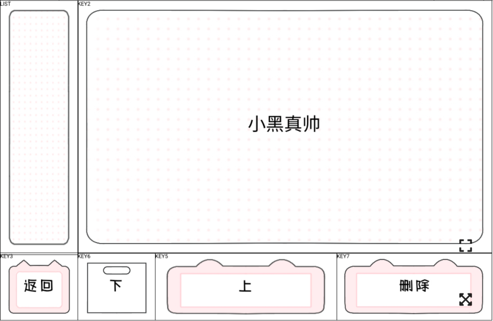

九宫格
9.png 普通状态9a.png 按下状态
先认识底包，再一次只改一项。每一步都告诉你改什么、在哪里改、怎么检查。
先学更换背景主背景文件是 abj.png。资料明确标注：abj = 背景＋顶栏，顶栏通常已经贴在背景图上方。
底包 / skin / light / res / abj.png底包 / skin / dark / res / abj.pngland 或 port 目录中还有同名 abj.png，它们通常控制横屏或竖屏，也要制作对应尺寸的版本。请在整个底包中搜索“abj”。
9.png 普通状态9a.png 按下状态
26.png 普通状态26a.png 按下状态
123.png 普通状态123a.png 按下状态
26y.png 普通状态26ya.png 按下状态
shouxie 手写axmb 符号和候选字
qj / gnqj / qja 前景axtb / aguangbo 漂浮和光波
把辅助图放在 Procreate 最底层并降低透明度。在新图层制作，导出前隐藏辅助图，不要把 KEY 编号和网格导入成品。





skin/light/res。abj.png，深色模式中的同名文件也要处理。qj 是字母/数字文字，gnqj 是功能键前景，qja 是按下状态字母。res/logo；苹果顶栏图标通常在里面的子文件夹。anim.ini 找到 PARTICLE_IMAGE，新手先只换同名 PNG。default.css 的 PRESS_SOUND_PATH。FONT_COLOR、HL_COLOR、NL_COLOR。检查是否多套目录、扩展名是否正确、配置是否改坏。
检查文件名大小写、后缀、目录和配置引用。
检查画布尺寸、横竖屏素材和人物是否超出画布。
检查真实音频格式、文件名、声音路径和手机设置。
检查颜色格式、背景对比度和按下状态颜色。
检查 anim.ini、粒子 PNG、透明度和参数是否为 0。